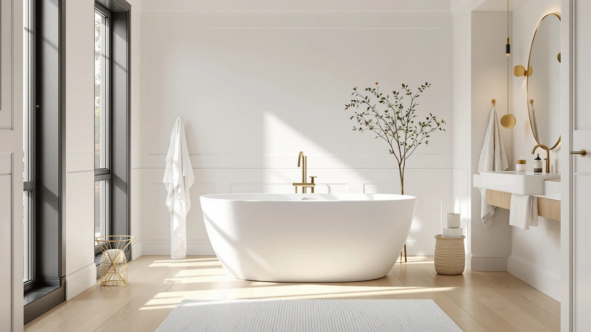

Quick Answer
After comparing 39 freestanding tubs on size, water depth, material, and installation, the WOODBRIDGE 59" Acrylic Freestanding Bathtub is the best for most bathrooms: a genuinely deep soak, a fit that works in a standard alcove-width footprint, and a matte-black drain that looks far more expensive than $719. If your budget is tighter, the $405 double-backrest 59" tub delivers most of the same soak for less.
Our pick: WOODBRIDGE 59" Acrylic Freestanding Bathtub — $719.00 Check Price on Amazon
Things to Know Before You Buy
- Measure the doorway and the room, not just the tub. A 67" tub needs clearance to carry in and 4-6" of walk-around space to clean behind. Compact 55-59" tubs fit far more bathrooms.
- Freestanding tubs need floor-mounted or freestanding plumbing. The faucet does not come with the tub. Budget $150-$400 extra for a floor-mount tub filler and rough-in.
- Acrylic vs cast iron is a real trade-off. Acrylic is light (60-120 lbs), warm to the touch, and DIY-friendly. Cast iron holds heat longest and lasts decades but weighs 300-500 lbs and may need reinforced flooring.
- Deeper is not always better. A 15"+ water depth gives a true shoulder-covering soak, but taller walls are harder to climb into. Think about who is using it.
- Check the drain side. Center, left, or right drain placement has to line up with your rough-in or you will pay a plumber to move it.
Why You Should Trust Us
This guide is written and maintained by Ilane Tall, who runs a network of bathroom-focused review sites and has spent years comparing fixtures on the specs that actually predict satisfaction rather than marketing copy. We do not run a fake testing lab and we did not submerge seven $700 tubs in a warehouse. What we do is read every spec sheet, cross-check dimensions and water capacity against the listing photos and owner reviews, flag the recurring complaints, and refuse to recommend anything we would not install ourselves. Our Amazon commissions never change a ranking.How We Picked
We started with 39 freestanding tubs in stock on Amazon and filtered hard. We required a stated interior soaking depth, included overflow and drain hardware, and a certification (cUPC or equivalent) where the manufacturer provides one. We threw out anything under $250 that turned out to be a folding plastic tub or a baby bath. We prioritized brands with a track record in the category (WOODBRIDGE, ANZZI, Signature Hardware) but kept two well-reviewed value tubs to cover tighter budgets. Then we grouped the survivors by the decision most buyers actually face: how big is your bathroom, and how deep a soak do you want?How We Tested
Because a freestanding tub is judged by a small number of measurable things, our evaluation is built around them. For each tub we recorded exterior length and width, interior soaking length, water depth to the overflow, gallons to overflow, material and wall thickness, drain placement, and dry weight. We compared those numbers against the room sizes and plumbing situations most buyers describe, then read through owner reviews looking for the failures that only show up after installation: gel-coat crazing, wobble on uneven floors, overflow leaks, and drains that did not line up. A tub that looks identical to another in photos often diverges sharply on depth and capacity, and that is where our picks separate.Our Picks

WOODBRIDGE 59" Acrylic Freestanding Bathtub
What we like
- Genuinely deep soak with a comfortable backrest angle
- 59" length fits most bathrooms with room to clean around it
- Matte-black overflow and drain look premium
- Double-wall acrylic with reinforcement holds heat well for the price
Flaws but not dealbreakers
- Faucet is sold separately, like nearly every freestanding tub
- Glossy white shows water spots and needs regular wiping
| Material | — |
| Size | 59 Inch |

59" Acrylic Freestanding Bathtub Deep
What we like
- Lowest price of any full-size tub we recommend
- Double backrest design is genuinely comfortable for two
- cUPC certified with integrated overflow and drain included
- Deep soaking interior rivals tubs costing $300 more
Flaws but not dealbreakers
- Thinner acrylic loses heat faster than WOODBRIDGE
- Value brand with a shorter track record on long-term durability
| Material | — |
| Size | 59 Inch |

Signature Hardware 312541 Lena 72"
What we like
- Cast iron holds heat far longer than any acrylic tub
- Enameled surface resists scratches and lasts for decades
- Full 72" length for a true full-body soak
- Signature Hardware is an established, well-supported brand
Flaws but not dealbreakers
- Extremely heavy; may require reinforced flooring
- The most expensive tub here at $2,599, faucet and feet aside
| Material | — |
| Size | — |

ANZZI 55 Inch Acrylic Freestanding
What we like
- Compact 55" footprint fits tight bathrooms
- Ships pre-plumbed with built-in overflow and drain
- Roomy 72-gallon capacity despite the short length
- ANZZI is a recognized freestanding-tub specialist
Flaws but not dealbreakers
- 55" interior is short for taller bathers to stretch out
- Glossy finish shows every water spot
| Material | — |
| Size | 55 inch |

67" Acrylic Freestanding Bathtub Deep
What we like
- Full 67" length for a stretch-out soak
- Textured non-slip interior floor
- cUPC certified with chrome drain included
- Priced well below other 67" tubs
Flaws but not dealbreakers
- Needs a genuinely large bathroom and clear-out space
- Value brand without a long durability record
| Material | — |
| Size | 67 inch |

WOODBRIDGE 67" Acrylic Freestanding Bathtub
What we like
- Same trusted WOODBRIDGE build in a longer 67" size
- Matte-black drain and overflow for a premium look
- Deep, warm double-wall acrylic soak
- Straightforward, well-documented installation
Flaws but not dealbreakers
- 67" footprint rules out smaller bathrooms
- Faucet, again, is a separate purchase
| Material | — |
| Size | 67 Inch |

WOODBRIDGE 59" × 31-1/2" Compact
What we like
- Combined whirlpool and air jets for a spa-style soak
- Heated to keep the water warm through a long bath
- Compact 59" x 31.5" footprint for a jetted tub
- WOODBRIDGE build quality and support
Flaws but not dealbreakers
- At $1,746 it is a major step up in price
- Jets and heater need a nearby GFCI electrical connection
| Material | — |
| Size | 59 Inch |
Quick Comparison
| Product | Material | Price | Rating | Best for | Get it |
|---|---|---|---|---|---|
| WOODBRIDGE 59" Acrylic Freestanding Bathtub | — | $719.00 | 4 | Best overall | View on Amazon → |
| 59" Acrylic Freestanding Bathtub Deep | — | $404.99 | 4 | Best value | View on Amazon → |
| Signature Hardware 312541 Lena 72" | — | $2,599.00 | 4 | Premium / cast iron | View on Amazon → |
| ANZZI 55 Inch Acrylic Freestanding | — | $527.12 | 4 | Best compact | View on Amazon → |
| 67" Acrylic Freestanding Bathtub Deep | — | $549.99 | 4 | Best large value | View on Amazon → |
| WOODBRIDGE 67" Acrylic Freestanding Bathtub | — | $699.00 | 4 | Best large | View on Amazon → |
| WOODBRIDGE 59" × 31-1/2" Compact | — | $1,746.35 | 4 | Best with jets | View on Amazon → |
The Competition
We looked at 39 tubs and left most on the cutting-room floor. The FerdY Tahiti 55" ($999) is a beautiful curved acrylic tub, but for a compact size the ANZZI Chand gives you more capacity for less. The Signature Hardware Callaway 61" cast iron ($2,311) is excellent, but if you are buying cast iron the extra length of the Lena is worth the small premium. Several sub-$400 tubs looked tempting on price but turned out to be single-shell acrylic that loses heat quickly or, in a few cases, folding plastic tubs mislabeled as freestanding. And the Mokleba 65" ($940) is a solid double-ended tub that just did not beat a WOODBRIDGE on value or an ANZZI on fit.
Frequently Asked Questions
Do freestanding bathtubs come with a faucet?
Almost never. Freestanding tubs are sold as the tub plus overflow and drain hardware. The faucet, usually a floor-mounted tub filler, is a separate purchase that typically runs $150 to $400. Budget for it up front so the total does not surprise you.
Acrylic or cast iron: which should I buy?
Acrylic for most people. It is light (60 to 120 lbs), warm to the touch, easy to install, and far cheaper. Choose cast iron only if you want maximum heat retention and a tub that lasts decades, and your floor can take 300 to 500 lbs plus water. We cover this in depth in our acrylic vs cast iron comparison.
What size freestanding tub do I need?
Measure your bathroom and your doorway first. A 55 to 59" tub fits most bathrooms with room to clean around it; 67" and up needs a genuinely large room and carry-in clearance. Interior soaking length matters more than exterior length for how it feels to use.
Can I install a freestanding tub myself?
An acrylic tub on a ground floor with accessible plumbing is a realistic DIY or handyman job. But you will still need a plumber for the floor-mount filler rough-in, and a jetted or heated tub needs a GFCI electrical connection. Cast iron nearly always needs professional help just to move it.
How deep is a good soaking tub?
Look for at least 14 to 15 inches of water depth to the overflow for a true shoulder-covering soak. Many standard tubs are shallower than that. Every tub on this list states its depth, which is exactly why we prioritized that number.